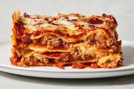

Lasagna Recipe

Ingredients:
- 1 pound ground beef
- 1 onion, chopped
- 2 cloves garlic, minced
- 1 can (28 ounces) crushed tomatoes
- 2 cans (6 ounces each) tomato paste
- 2 teaspoons dried basil leaves
- 1 teaspoon salt
- 1/4 teaspoon ground black pepper
- 4 cups shredded mozzarella cheese
- 1 1/2 cups ricotta cheese
- 12 lasagna noodles, cooked and drained
Instructions:
- Preheat oven to 375°F (190°C).
- In a large skillet, cook ground beef, onion, and garlic over medium heat until meat is no longer pink; drain.
- Stir in crushed tomatoes, tomato paste, basil, salt, and pepper. Simmer for 30 minutes, stirring occasionally.
- In a 9x13 inch baking dish, spread a thin layer of meat sauce. Layer with 4 noodles, half of the ricotta cheese, and half of the mozzarella cheese. Repeat layers, ending with remaining meat sauce and mozzarella cheese.
- Cover with foil and bake for 25 minutes. Remove foil and bake for an additional 25 minutes or until cheese is bubbly and golden brown.
- Let stand for 15 minutes before serving.
Back to Index